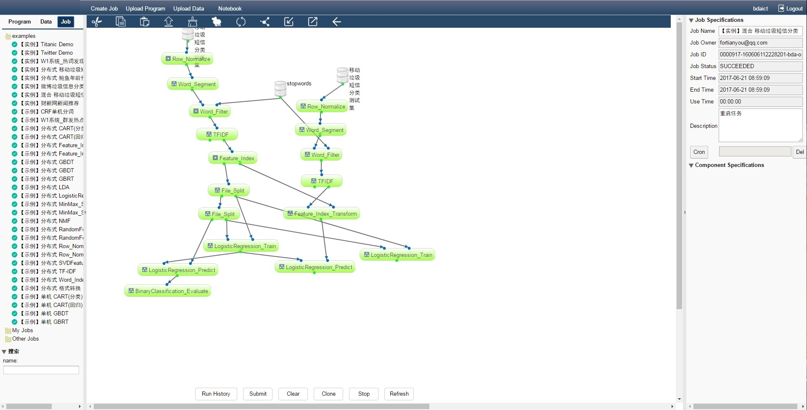
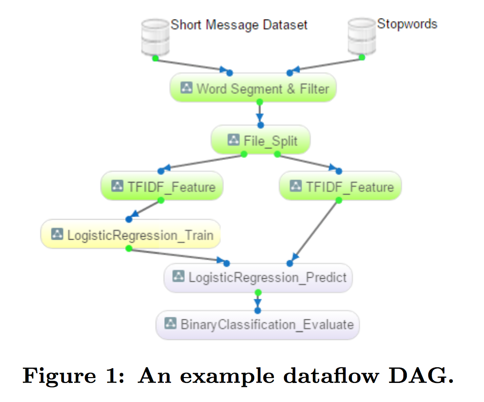
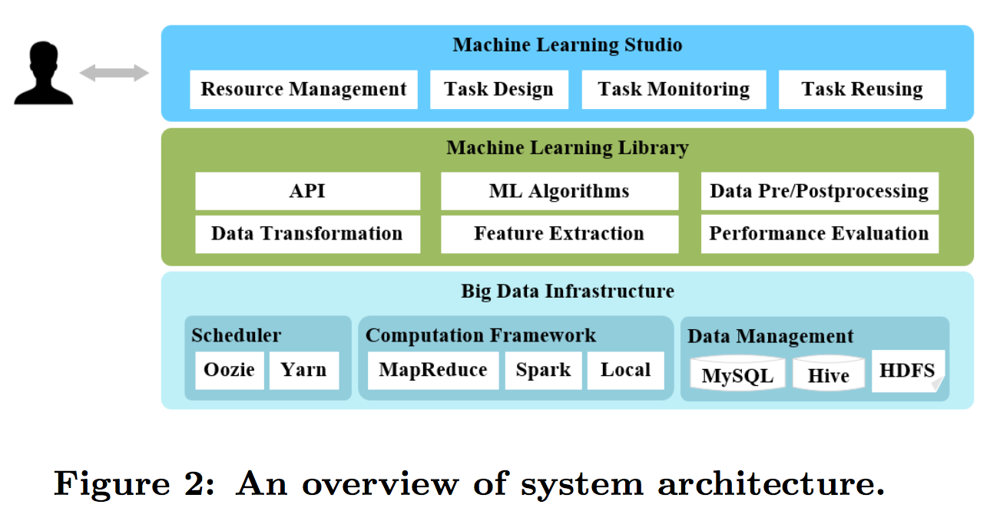

Big Date Analysis System Research (online demo)

Description
This task aims to implement a general-purpose dataflow-based system for easing the process of applying machine learning algorithms to real world tasks. And now it is realised as a open source project, BDA is our research version and EML is the open source version.
- BDA: big data analysis as a service.
- EML: An Open Source and general-purpose dataflow-based system for easing the process of applying machine learning algorithms to real world tasks
Problem
Machine learning algorithms have become the key components in many big data applications. However, the full potential of machine learning is still far from been realized be- cause using machine learning algorithms is hard, especially on distributed platforms such as Hadoop and Spark. The key barriers come from not only the implementation of the algorithms themselves, but also the processing for applying them to real applications which often involve multiple steps and different algorithms.
Main Work

n the system, a learning task is formulated as a directed acyclic graph (DAG) in which each node represents an operation (e.g., a machine learning algorithm), and each edge represents the flow of the data from one node to its descendants. Graphical user interface is implemented for mak- ing users to create, configure, submit, and monitor a task in a drag-and-drop manner.
Conclusion

The system has been deployed as a machine learning service and can be access from the Internet. And it is an open source project now, which can be accessed on the github
- lowering the barriers of defining and executing machine learning tasks
- sharing and re-using the implementations of the algorithms, the task dataflow DAGs, and the (intermediate) experimental results;
- seamlessly integrating the stand-alone algorithms as well as the distributed algorithms in one task.
My work
- Responsible for the survey of this Big Data Analysis System
- Contributed word2vec algorithm to Lib
- Core member of designing BDA Studio, which is a HCI to enable user to modify model or change parameters on website visual interface.
- Developed BDA to an open source version system EasyML and created corresponding Docker images and use Weave to enable communication across Docker containers.
- Wrote scripts to achieve fast cluster deployment using our Docker images
Date
Paper